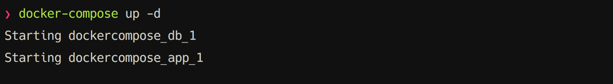
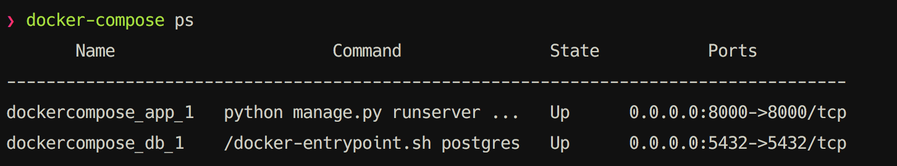

In a previous post, I have talked about basics of Docker and how to utilize it in your own development environment. One important benefit of Docker is that you can have multiple versions of applications or dependencies (e.g. MySQL, PHP) installed in your machine through docker images. In this post, I'll discuss about Docker Compose. In a nutshell, Docker Compose lets the user define linked containers using a file in YAML format. For example you can have a Django application container connected to a PostgreSQL container defined in your docker-compose.yml file. Containers defined in the yaml file created or deleted using the command line tool docker-compose.
Sample Django application using Docker Compose
If you are using Mac OSX, you need to boot up your docker using docker-machine start. If you are using linux, by default it is already running. After that, create a new folder for your project, this is where you are going to store your django application, Dockerfile and docker-compose file. Inside your project folder, create a new django application by django-admin startproject app.
Dockerizing our django application
To start using docker in our django application, we need to create a Dockerfile inside the project root directory. Refer to the Dockerfile below:
FROM python:3.4
ADD requirements.txt /app/
RUN pip install -r /app/requirements.txt
WORKDIR /app
EXPOSE 8000
This Dockerfile uses the python:3.4 Docker image as the base image. It also installs the django application dependencies using pip. Then sets the default working directory in /app folder. Lastly, it exposes port 8000, since by default, this is where django apps run. You can try building a docker image using this Dockerfile by docker build -t my-django-app
Using Docker Compose in our project
We can use docker compose to define and connect the containers that we will use in our project. Notice that we didn't declare in the Dockerfile to copy the django project in the docker image, meaning if we try to run the docker image right now, it won't have access (or copy) to the django application. This is intentional, since we are only using docker in our development environment. Instead of copying the project inside the docker image, we can use volume to mount our django project inside the running container. Create a new docker-compose.yml file inside your project root directory and copy the content below.
version: '2'
networks:
app-network:
driver: bridge
services:
app:
build: .
command: python manage.py runserver 0.0.0.0:8000
networks:
- app-network
environment:
- DB_HOST=app-db
- DB_NAME=myapp
- DB_USER=myapp
- DB_PASSWORD=mysecretpass
volumes:
- ./app:/app
links:
- db:app-db
ports:
- 8000:8000
db:
image: postgres
networks:
- app-network
environment:
- POSTGRES_USER=myapp
- POSTGRES_PASSWORD=mysecretpass
ports:
- 5432:5432
The first line in the docker-compose.yml file defines the version of docker compose that we are using. The second line defines a new network where we set our containers to run. It is ideal to let connected containers run on a different network other than the default bridge network. The next line defines the services or containers that we will create and use. For each container, we define the image that it will use, mounted volumes, ports exposed, environment variables, network where it will run etc.
One benefit in using docker compose is that we can organize and connect our containers using just one docker-compose.yml file. In our example, we defined a django app container that is connected to a postgres container. We defined our django app container to mount a volume ./app to the container. This enables us to edit our code without accessing the insides of the container. The link parameter tells docker compose to map the postgres container db as app-db inside our app container. This enables us to use app-db as the DB_HOST value and thus connect to the postgres container.
Run docker-compose up -d to start building images and running our containers. You should see the results below.

To view the status of your containers, run docker-compose ps.

Finally, access your django application in the browser using localhost:8000. If you are using mac, get the ip of your docker machine by docker-machine ip then access the app in the browser using [your docker machine ip]:8000. That's it, you now have a connected django app container to a postgresql container.